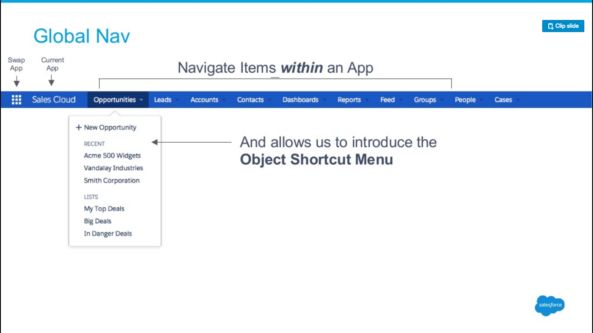
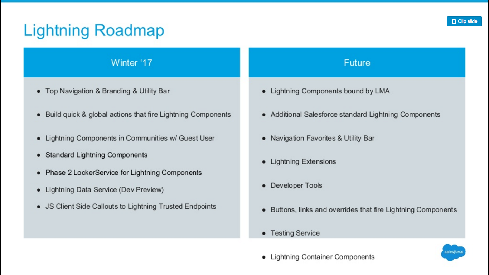

イベント・Webinar 情報
Force.com MVP イベント in Chicago
今年も Force.com MVP の人たちが集まるイベントがシカゴで開催されています。
日本からも何名か行かれているようです。
ちゃんとしたイベントのページは見つかりませんでしたが、#MVPChicago16 というハッシュタグでみんな写真上げてるので
雰囲気を知ることができます。
7/20(水) - 7/21(木) Salesforce Summer 2016 Tokyo
今週です。
ニュース系
Amazon、クラウドIDEを提供する「Cloud9」買収。AWSが統合開発環境をSaaSとして提供する布石か － Publickey
Cloud9 というと Salesforce の IDE も提供していたとこですよね。
https://get.c9.io/salesforce/
Lightning Experience ロードマップ公開？
http://www.salesforce.com/campaigns/lightning/#Roadmap に。
今後追加される機能の名称がずらっと並んでるだけですが。
【重要】 Winter '17 でのSalesforce1サポート要件の変更について
Winter'17 から S1 のサポート要件が変更となります。
iPhone 5 がサポート対象外になったりするのはまだいいですが、Android に至っては Galaxy や Nexus などの主要なもの以外はすべてサポート対象外になるそうです。
厳しい。。。
FAQ - Lightning Experience Navigation Changing with Winter ‘17
Winter'17 から LEX のメニューが左側でなく上部に移動するようですね。
セールスフォース、フィールドサービス管理を最適化する「Field Service Lightning」を今秋提供 - クラウド Watch
これまだ出てなかったんですね。
開発者向け
Summer '16 Lightning Update for ISVs (June 30, 2016)
前半は Summer'16 のアップデート内容ですが、後半からロードマップが紹介されています。
グローバルナビゲーションについても言及されているほか、気になったのは Lightning Component のテストツールのことが書かれてたことかな。。。



Comparing IDEs for Salesforce Development — Arkus, Inc.
Salesforce 開発用 IDE の比較。
- Developer Console
- Force.com IDE Plugin for Eclipse
- MavensMate
- Aside.io
- IntelliJ IDEA with Illuminated Cloud
- Cloud9
- Welkin Suite
が紹介されています。けっこう知らないの多い。。。んですが、IDE 使わないので本文はほとんど読んでません。
Lightning Components Facets – My Salesforce adventure
Lightning Component の ファセット について。
わかりやすいです。
ETLC_ApexBridge: Lightning Components Communicating With Apex Design Pattern
Lightning Component 開発におけるクライアント／サーバー間の通信処理の部分を再利用可能な形で実装したアーキテクチャの紹介。
- サーバー通信する部分は専用のコンポーネントを用意する（記事中で
ETLC_ApexBridgeと呼んでいるもの） - コンポーネントを作成する際、↑のコンポーネントを
<c:ETLC_ApexBridge aura:id="ApexBridge" />として埋め込んでおく - クライアント側コントローラからは以下のような形で、サーバーとの通信用コンポーネントを介してサーバー側コントローラのメソッドを呼び出す
var apexBridge = component.find("ApexBridge");
apexBridge.callApex({
component: component,
data: {
operation: "FindAccounts"
},
callBackMethod: function (data) {
console.log("Data Returned", data);
}
});
- サーバー側コントローラは
ETLC_ApexBridge_Abstractというクラスを継承し、やりたい処理をprocessメソッドとして定義する
...ということなのかな。
記事だけ読んでもピンとこないので、GitHub のコードもちゃんと読む必要がありそう。
興味深いけど、サーバー側のコントローラは process メソッドしか持たせることができなくなるのか...？だとしたら使えない。。。
Six Tips to Great Unit Tests - Developer Relations
良い単体テストを書くための 6 つの Tips。
- Arrange, Act, Assert
- Arrange (テストに必要なデータを用意する)、Act (テストを実行する)、Assert (テスト結果を検証する) を明確に分けましょう
- AAA 自体はテストの書き方としてよく知られた方法らしい
- Run Tests as Real Users
System.runAs()使ってちゃんと実際のユーザー権限でテストを実行しましょう
- Use Test.startTest() and Test.stopTest()
- そのまんま。AAA で言うと Act のところに
startTest(), stopTest()使いましょう - 非同期処理を Assert 前に完了させるためにも
stopTest()は重要
- そのまんま。AAA で言うと Act のところに
- Exercise Bulk Triggers
- トリガのテストを書くときは、1 つ以上のオブジェクト(レコード)、理想的には 10 ~ 20 ぐらいのオブジェクトを扱うテストを 1 つは書くこと
- これは一度に処理できる数をチェックしているのではなく、トリガが複数のオブジェクトを処理できることをテストする目的
- Note: かといってあまりにも多くのオブジェクトを用意するのは避けること。Sandbox 環境はリソースが限られていてタイムアウトになる可能性がある
- Isolation – Run Tests with seeAllData=false
- テストが組織依存にならないよう
seeAllData=falseをつけよう (最近はこれがデフォルトだけど)
- テストが組織依存にならないよう
- Automate Test Execution (For Free)
- Gearset でテストを自動化しよう
最後の Gearset というテスト自動化サービス、知りませんでした。
ちょっとどんなことができるか触ってみる必要があるな。。。
Bob Buzzard Blog: Force CLI Part 3 - Accessing Data
Part1, Part2 に引き続き Force CLI の使い方を紹介した記事。
force query による SOQL 実行、force record によるレコードの CRUD 処理など。
Apex コードの字句解析器を趣味で自作 - Appirio Japan
字句解析器って初めて聞きました。面白い。
記事の本旨と関係ないですが、
趣味のものは３時間を超えると未完成になりがちなので、３時間以内に作りきることは重要です！
わかります。
Trailhead モジュール追加
また色々追加されてるようです。